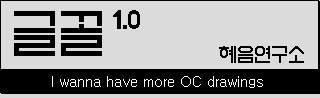
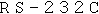
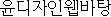
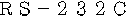

이 사이트는 1400px의 Windows PC에 최적화 되어 있습니다.
작은 글꼴의 경우 크롬 브라우저는 최소 글꼴 크기 설정에 따라 부정확하게 표시될 수 있습니다.
또한 g,y등의 일부 글꼴의 하단 부분이 잘려 보일수 있습니다.
유료글꼴, 글꼴파일문제 등으로 인해 정상적으로 표시할 수 없는 글꼴은 맨 아래에 분리해 놨습니다.
글꼴의 라이센스는 본링크의 안내를 참고 바라며, 요청에 따라 본 페이지의 내용이 변경될 수 있습니다.
천리안 시절의 폰트는 그때의 저작권인식문제상 동일한 한글 자형의 폰트가 중복수록 될수도 있습니다.
[*] 도스 또는 게임기의 폰트를 컨버팅 한것 (저직권자≠원작자, 비트맵 폰트는 서체 디자인권이 없습니다)
[H] 하이텔의 김윤수님의 폰트모음2를 컨버팅(도깨비844식으로 변환됨, 언젠가 TTF 제공 예정)
[-] 브라우저 정상출력 불가로 이미지로 대체
레거시 프로그램에서는 작동하지만, 최신 프로그램에서는 정상작동하지 않을 확률이 높습니다.
[1] 김중태 글꼴: IT 문화원에서 원본 배포, 상업적 사용, 변형 전부 허용
[2] 장영화 글꼴: 등록번호: 93-00112-SB-F-016, 상업용 사용 제한 (현재도 유효한지는 확인 못함)
[O] SIL 오픈 폰트 라이선스
[A2]아파치 라이선스 2.0
[M] MIT 라이선스
[C] 크리에이티브 커먼즈 라이선스 (자세한 조건은 사이트 참조 바람)
[G] GNU 라이센스
[P] 퍼블릭 도메인
[E] 기타 무료 라이선스 (자세한 내용은 저작권자한테 확인바람)
[E1]마이크로소프트 글꼴: 유연하게 사용가능
[!] 상업적 사용 금지 글꼴
[!1]소야 글꼴: 2015년 배포중단. 개인사용자의 비상업적인 용도만으로 이용가능
[!2]윤디자인 왭폰트글꼴: 2014년 배포중단 추정. 비상업적인 용도만으로 이용가능
(2013년부터 상업적용도도 가능해진 것으로 보이나 그냥 사용 안하는것 추천)
해당 사이트에서는 글꼴의 단순 비교만을 하고있으며, 비트맵 파일의 글꼴 컨버팅을 제외한,
TTF/OTF/WOFF로 배포되는 윤곽선 글꼴파일을 불법적으로 배포할 목적의 사이트가 아닙니다.
비트맵 글꼴의 컨버팅은 Pixel font maker의 포크버전 (원본-exqt_)를 이용하고 있습니다.
| 글꼴이름 | 원본 | 영어예문 | 한국어예문 | 일본어예문 |
|---|---|---|---|---|
| 8x8 | ||||
| 갈무리모노7 | Quiple(갈무리 기반) [O] | HIMEM is testing extended memory... | 1,537 바이트를 사용할 수 있습니다 | ＲＳ－２３２Ｃインターフェイスが使用可能です |
| 달무리 | RanolP(갈무리, 둥근모꼴 기반) [A2] | HIMEM is testing extended memory... | 1,537 바이트를 사용할 수 있습니다 | |
| 갈무리7 | Quiple(갈무리 기반) [O] | HIMEM is testing extended memory... | 1,537 바이트를 사용할 수 있습니다 | ＲＳ－２３２Ｃインターフェイスが使用可能です |
| 8x9 | ||||
| 윤디자인웹돋움 |  윤디자인연구소 [!2][-] 윤디자인연구소 [!2][-] |
|||
| 윤디자인웹바탕 | 윤디자인연구소 [!2][-] | |||
| 9x9 | ||||
| 윤디자인웹고딕 | 디지틀조선일보, 윤디자인연구소 [!2][-] |  |
||
| 8x12 | ||||
| 갈무리11 Condensed | Quiple(갈무리 기반) [O] | HIMEM is testing extended memory... | 1,537 바이트를 사용할 수 있습니다 | ＲＳ－２３２Ｃインターフェイスが です |
| 8x15 | ||||
| HE실루아 | 포켓몬스터 은(프로토타입)/게임프리크[O][*] | HIMEM is testing extended memory... | 1,537 바이트를 사용할 수 있습니다 | |
| 9x12 | ||||
| 소야벗9 | 임소야 [!1] | HIMEM is testing extended memory... | 1,537 바이트를 사용할 수 있습니다 | ＲＳ－２３２Ｃインターフェイスが です |
| 소야꼬마9 | 임소야 [!1] | HIMEM is testing extended memory... | 1,537 바이트를 사용할 수 있습니다 | ＲＳ－２３２Ｃインターフェイスが です |
| 소야날림9 | 임소야 [!1] | HIMEM is testing extended memory... | 1,537 바이트를 사용할 수 있습니다 | ＲＳ－２３２Ｃインターフェイスが です |
| 10x10 | ||||
| 갈무리모노9 | 닌텐도DS/한국닌텐도 [O] | HIMEM is testing extended memory... | 1,537 바이트를 사용할 수 있습니다 | ＲＳ－２３２Ｃインターフェイスが使用可能です |
| 갈무리9 | 닌텐도DS/한국닌텐도 [O] | HIMEM is testing extended memory... | 1,537 바이트를 사용할 수 있습니다 | ＲＳ－２３２Ｃインターフェイスが使用可能です |
| LanaPixel | Eishiya [C][O][*] | HIMEM is testing extended memory... | 1,537 바이트를 사용할 수 있습니다 | ＲＳ－２３２Ｃインターフェイスが使用可能です |
| 10x11 | ||||
 윤디자인웹돋움 윤디자인웹돋움 |
윤디자인연구소 [!2][-] | |||
| 소야논8 | 임소야 [!1] | HIMEM is testing extended memory... | 1,537 바이트를 사용할 수 있습니다 | ＲＳ－２３２Ｃインターフェイスが です |
| 윤디자인웹바탕 | 윤디자인연구소 [!2][-] |  |
||
| 10x12 | ||||
| RamChe | 이키나 게임즈 [E] | HIMEM is testing extended memory... | 1,537 바이트를 사용할 수 있습니다 | |
| 엑큐 | exqt_ [E] | HIMEM is testing extended memory... | 1,537 바이트를 사용할 수 있습니다 | |
| 소야뜰9 | 임소야 [!1] | HIMEM is testing extended memory... | 1,537 바이트를 사용할 수 있습니다 | ＲＳ－２３２Ｃインターフェイスが です |
| 소야바른9 | 임소야 [!1] | HIMEM is testing extended memory... | 1,537 바이트를 사용할 수 있습니다 | ＲＳ－２３２Ｃインターフェイスが です |
| 소야쌀9 | 임소야 [!1] | HIMEM is testing extended memory... | 1,537 바이트를 사용할 수 있습니다 | ＲＳ－２３２Ｃインターフェイスが です |
| 11x11 | ||||
| 돋움체 | 윈도95/한양시스템 [E1] | HIMEM is testing extended memory... | 1,537 바이트를 사용할 수 있습니다 | ＲＳ－２３２Ｃインターフェイスが使用可能です |
| 굴림 | 윈도95/한양시스템 [E1] | HIMEM is testing extended memory... | 1,537 바이트를 사용할 수 있습니다 | ＲＳ－２３２Ｃインターフェイスが使用可能です |
| 윤디자인웹고딕 | 디지틀조선일보, 윤디자인연구소 [!2][-] | |||
| 바탕 | 윈도95/한양시스템 [E1] | HIMEM is testing extended memory... | 1,537 바이트를 사용할 수 있습니다 | ＲＳ－２３２Ｃインターフェイスが使用可能です |
| 윤디자인웹명조 | 디지틀조선일보, 윤디자인연구소 [!2][-] | |||
| 궁서 | 윈도95/한양시스템 [E1] | HIMEM is testing extended memory... | 1,537 바이트를 사용할 수 있습니다 | ＲＳ－２３２Ｃインターフェイスが使用可能です |
| 11x12 | ||||
| 윤디자인웹돋움 | 윤디자인연구소 [!2][-] | |||
| 윤디자인웹바탕 | 윤디자인연구소 [!2][-] | |||
| 소야다듬9 | 임소야 [!1] | HIMEM is testing extended memory... | 1,537 바이트를 사용할 수 있습니다 | ＲＳ－２３２Ｃインターフェイスが です |
| 소야나눔9 | 임소야 [!1] | HIMEM is testing extended memory... | 1,537 바이트를 사용할 수 있습니다 | ＲＳ－２３２Ｃインターフェイスが です |
| 소야솔9 | 임소야 [!1] | HIMEM is testing extended memory... | 1,537 바이트를 사용할 수 있습니다 | ＲＳ－２３２Ｃインターフェイスが です |
| 소야영수9 | 임소야 [!1] | HIMEM is testing extended memory... | 1,537 바이트를 사용할 수 있습니다 | ＲＳ－２３２Ｃインターフェイスが です |
| 11x13 | ||||
| 소야얼음10 | 임소야 [!1] | HIMEM is testing extended memory... | 1,537 바이트를 사용할 수 있습니다 | ＲＳ－２３２Ｃインターフェイスが です |
| 소야곧은10 | 임소야 [!1] | HIMEM is testing extended memory... | 1,537 바이트를 사용할 수 있습니다 | ＲＳ－２３２Ｃインターフェイスが です |
| 12x12 | ||||
| 굴림체 | 윈도95/한양시스템 [E1] | HIMEM is testing extended memory... | 1,537 바이트를 사용할 수 있습니다 | ＲＳ－２３２Ｃインターフェイスが使用可能です |
| 갈무리모노11 | 닌텐도DS/한국닌텐도 [O][*] | HIMEM is testing extended memory... | 1,537 바이트를 사용할 수 있습니다 | ＲＳ－２３２Ｃインターフェイスが使用可能です |
| 굴림 | 윈도95/한양시스템 [E1] | HIMEM is testing extended memory... | 1,537 바이트를 사용할 수 있습니다 | ＲＳ－２３２Ｃインターフェイスが使用可能です |
| 갈무리11 | 닌텐도DS/한국닌텐도 [O][*] | HIMEM is testing extended memory... | 1,537 바이트를 사용할 수 있습니다 | ＲＳ－２３２Ｃインターフェイスが使用可能です |
| silver | Poppy Works [C] | HIMEM is testing extended memory... | 1,537 바이트를 사용할 수 있습니다 | ＲＳ－２３２Ｃインターフェイスが使用可能です |
| 바탕 | 윈도95/한양시스템 [E1] | HIMEM is testing extended memory... | 1,537 바이트를 사용할 수 있습니다 | ＲＳ－２３２Ｃインターフェイスが使用可能です |
| 윤디자인웹고딕 | 디지틀조선일보, 윤디자인연구소 [!2][-] | |||
| 윤디자인웹명조 | 디지틀조선일보, 윤디자인연구소 [!2][-] | |||
| 궁서 | 윈도95/한양시스템 [E1] | HIMEM is testing extended memory... | 1,537 바이트를 사용할 수 있습니다 | ＲＳ－２３２Ｃインターフェイスが使用可能です |
| 갈무리11 Bold | Quiple(갈무리 기반) [O] | HIMEM is testing extended memory... | 1,537 바이트를 사용할 수 있습니다 | ＲＳ－２３２Ｃ |
| 12x13 | ||||
| 윤디자인웹돋움 | 윤디자인연구소 [!2][-] | |||
| 윤디자인웹고딕 | 디지틀조선일보, 윤디자인연구소 [!2][-] | |||
| 윤디자인웹바탕 |  윤디자인연구소 [!2][-] 윤디자인연구소 [!2][-] |
|||
| 윤디자인웹명조 | 디지틀조선일보, 윤디자인연구소 [!2][-] | |||
| HE둥근모꼴12 | 김중태 [O][*] | HIMEM is testing extended memory... | 1,537 바이트를 사용할 수 있습니다 | |
| 12x16 | ||||
| HE아현리 | 아이큐2000/대우전자 [O][*] | HIMEM is testing extended memory... | 1,537 바이트를 사용할 수 있습니다 | |
| 13x13 | ||||
| 돋움체 | 윈도95/한양시스템 [E1] | HIMEM is testing extended memory... | 1,537 바이트를 사용할 수 있습니다 | ＲＳ－２３２Ｃインターフェイスが使用可能です |
| 굴림 | 윈도95/한양시스템 [E1] | HIMEM is testing extended memory... | 1,537 바이트를 사용할 수 있습니다 | ＲＳ－２３２Ｃインターフェイスが使用可能です |
| 바탕 | 윈도95/한양시스템 [E1] | HIMEM is testing extended memory... | 1,537 바이트를 사용할 수 있습니다 | ＲＳ－２３２Ｃインターフェイスが使用可能です |
| 궁서 | 윈도95/한양시스템 [E1] | HIMEM is testing extended memory... | 1,537 바이트를 사용할 수 있습니다 | ＲＳ－２３２Ｃインターフェイスが使用可能です |
| 13x14 | ||||
| 윤디자인웹돋움 | 윤디자인연구소 [!2][-] | |||
| 윤디자인웹바탕 |  윤디자인연구소 [!2][-] 윤디자인연구소 [!2][-] |
 | ||
| 14x14 | ||||
| 돋움체 | 윈도95/한양시스템 [E1] | HIMEM is testing extended memory... | 1,537 바이트를 사용할 수 있습니다 | ＲＳ－２３２Ｃインターフェイスが使用可能です |
| 굴림 | 윈도95/한양시스템 [E1] | HIMEM is testing extended memory... | 1,537 바이트를 사용할 수 있습니다 | ＲＳ－２３２Ｃインターフェイスが使用可能です |
| 바탕 | 윈도95/한양시스템 [E1] | HIMEM is testing extended memory... | 1,537 바이트를 사용할 수 있습니다 | ＲＳ－２３２Ｃインターフェイスが使用可能です |
| 궁서 | 윈도95/한양시스템 [E1] | HIMEM is testing extended memory... | 1,537 바이트를 사용할 수 있습니다 | ＲＳ－２３２Ｃインターフェイスが使用可能です |
| 15x15 | ||||
| 돋움체 | 윈도95/한양시스템 [E1] | HIMEM is testing extended memory... | 1,537 바이트를 사용할 수 있습니다 | ＲＳ－２３２Ｃインターフェイスが使用可能です |
| 굴림 | 윈도95/한양시스템 [E1] | HIMEM is testing extended memory... | 1,537 바이트를 사용할 수 있습니다 | ＲＳ－２３２Ｃインターフェイスが使用可能です |
| 갈무리14 | 닌텐도DS/한국닌텐도 [O][*] | HIMEM is testing extended memory... | 1,537 바이트를 사용할 수 있습니다 | ＲＳ－２３２Ｃインターフェイスが使用可能です |
| 바탕 | 윈도95/한양시스템 [E1] | HIMEM is testing extended memory... | 1,537 바이트를 사용할 수 있습니다 | ＲＳ－２３２Ｃインターフェイスが使用可能です |
| 궁서 | 윈도95/한양시스템 [E1] | HIMEM is testing extended memory... | 1,537 바이트를 사용할 수 있습니다 | ＲＳ－２３２Ｃインターフェイスが使用可能です |
| 15x16 | ||||
| 윤디자인웹돋움 | 윤디자인연구소 [!2][-] |  |
||
| 윤디자인웹고딕 | 디지틀조선일보, 윤디자인연구소 [!2][-] | |||
| 윤디자인웹바탕 | 윤디자인연구소 [!2][-] | |||
| 16x16 고정폭 | ||||
| 궁서체 | 윈도95/한양시스템 [E1] | HIMEM is testing extended memory... | 1,537 바이트를 사용할 수 있습니다 | ＲＳ－２３２Ｃインターフェイスが使用可能です |
| 한글궁서체 | 한글/한글과컴퓨터 [H] | 1,537 바이트를 사용할 수 있습니다 | ||
| 도스명조 | 한글/한글과컴퓨터 [M][*] | HIMEM is testing extended memory... | 1,537 바이트를 사용할 수 있습니다 | 使用可能 |
| 한글명조체 | 한글/한글과컴퓨터 [H] | 1,537 바이트를 사용할 수 있습니다 | ||
| 보통체 | TESTCOMM [H] | 1,537 바이트를 사용할 수 있습니다 | ||
| 보통체2 | TESTCOMM [H] | 1,537 바이트를 사용할 수 있습니다 | ||
| 명조체 | 김윤수 [H] | 1,537 바이트를 사용할 수 있습니다 | ||
| 강명조체 | 강에디터/박호용 [H] | 1,537 바이트를 사용할 수 있습니다 | ＲＳ－２３２Ｃインターフェイスが です | |
| 복선명조체 | 하나리C라이브러리/ 이확영 [H] |
1,537 바이트를 사용할 수 있습니다 | ||
| 태백명조체 | 태백한글/태백무른모 [H] | 1,537 바이트를 사용할 수 있습니다 | ||
| 태백명조체개조 | 불명(태백명조체 기반) [H] | 1,537 바이트를 사용할 수 있습니다 | ||
| HE바람네모명조체 | 한글바람/바람시스템 [O][*] | HIMEM is testing extended memory... | 1,537 바이트를 사용할 수 있습니다 | ＲＳ－２３２Ｃインターフェイスが使用可能です |
| HE애오개 | X-2/대우전자 [O][*] | HIMEM is testing extended memory... | 1,537 바이트를 사용할 수 있습니다 | ＲＳ－２３２Ｃインターフェイスが使用可能です |
| 반명조체 | TESTCOMM [H] | 1,537 바이트를 사용할 수 있습니다 | ||
| 한궁체 | 허인구 [H] | 1,537 바이트를 사용할 수 있습니다 | ||
| 도스이야기 | 이야기/큰사람 [M][*] | HIMEM is testing extended memory... | 1,537 바이트를 사용할 수 있습니다 | ＲＳ－２３２Ｃインターフェイスが使用可能です |
| 이야기 굵은체 | 이야기/큰사람 [M][*] | HIMEM is testing extended memory... | 1,537 바이트를 사용할 수 있습니다 | ＲＳ－２３２Ｃインターフェイスが です |
| 이야기굵은체 | 이야기/큰사람 [H] | HIMEM is testing extended memory... | 1,537 바이트를 사용할 수 있습니다 | ＲＳ－２３２Ｃインターフェイスが です |
| 이야기굵은체2 | 김윤수 [H] | 1,537 바이트를 사용할 수 있습니다 | ||
| 이야기굵은체3 | 김윤수 [H] | 1,537 바이트를 사용할 수 있습니다 | ||
| HBIOS-SYS | MS-DOS/마이크로소프트 [O][*] | HIMEM is testing extended memory... | 1,537 바이트를 사용할 수 있습니다 | インターフェイスが です |
| 파울루스체 | 김윤수 [H] | 1,537 바이트를 사용할 수 있습니다 | ||
| 임꺽정체 | 한글에디터 산/박규현 [H] | HIMEM is testing extended memory... | 1,537 바이트를 사용할 수 있습니다 | |
| HE신이문 | SPC-1500/삼성전자 [O] | HIMEM is testing extended memory... | 1,537 바이트를 사용할 수 있습니다 | |
| 삼국지3글꼴 | 삼국지3/코에이, 비스코 [M] | HIMEM is testing extended memory... | 1,537 바이트를 사용할 수 있습니다 | ＲＳ－２３２Ｃインターフェイスが です |
| 작은삐침꼴 | 김중태 [*] | 1,537 바이트를 사용할 수 있습니다 | ||
| 삼보고딕체 | 삼보한글카드/ 삼보컴퓨터 [H] |
1,537 바이트를 사용할 수 있습니다 | ||
| HE바람네모보석체 | 한글바람/바람시스템 [O][*] | HIMEM is testing extended memory... | 1,537 바이트를 사용할 수 있습니다 | ＲＳ－２３２Ｃインターフェイスが使用可能です |
| HE태백고딕16/WIP | 태백한글/태백무른모 [*] | HIMEM is testing extended memory... | 1,537 바이트를 사용할 수 있습니다 | ＲＳ－２３２Ｃインターフェイスが使用可能です |
| 디나루체 | 김윤수 [H] | 1,537 바이트를 사용할 수 있습니다 | ||
| 굵은고딕체 | TESTCOMM [H] | 1,537 바이트를 사용할 수 있습니다 | ||
| 도깨비디나루 | 도깨비한글/한도컴퓨터 [H] | 1,537 바이트를 사용할 수 있습니다 | ||
| 도깨비디나루2 | 도깨비한글/한도컴퓨터 [H] | 1,537 바이트를 사용할 수 있습니다 | ||
| 도깨비디나루3 | 김윤수 (도깨비디나루 변형)[H] |
1,537 바이트를 사용할 수 있습니다 | ||
| HE바람네모고딕체 | 한글바람/바람시스템 [O][*] | HIMEM is testing extended memory... | 1,537 바이트를 사용할 수 있습니다 | ＲＳ－２３２Ｃインターフェイスが使用可能です |
| 굵은장식고딕체 | TESTCOMM [H] | 1,537 바이트를 사용할 수 있습니다 | ||
| 장식고딕체 | 김윤수 (굵은장식고딕체 기반) [H] |
1,537 바이트를 사용할 수 있습니다 | ||
| 중간고딕체 | 김윤수 [H] | 1,537 바이트를 사용할 수 있습니다 | ||
| 중간고딕체2 | 김윤수 [H] | 1,537 바이트를 사용할 수 있습니다 | ||
| 버금달꼴 | 김중태 [*] | 1,537 바이트를 사용할 수 있습니다 | ||
| 큰글고딕체 | 허인구 [H] | 1,537 바이트를 사용할 수 있습니다 | ||
| 뻗음꼴 | 김중태 [*] | 1,537 바이트를 사용할 수 있습니다 | ||
| 뫼꼴 | 김중태 [*] | 1,537 바이트를 사용할 수 있습니다 | ||
| 둥근모꼴+Fixedsys | 김중태 [P][*] | HIMEM is testing extended memory... | 1,537 바이트를 사용할 수 있습니다 | ＲＳ－２３２Ｃ |
| Neo둥근모 | 김중태 [O][*] | HIMEM is testing extended memory... | 1,537 바이트를 사용할 수 있습니다 | |
| 둥근모꼴 | 김중태 [*] | HIMEM is testing extended memory... | 1,537 바이트를 사용할 수 있습니다 | |
| 굵은둥근고딕체 | TESTCOMM [H] | 1,537 바이트를 사용할 수 있습니다 | ||
| 둥근고딕체 | 허인구 [H] | 1,537 바이트를 사용할 수 있습니다 | ||
| 부드러운 | 불명 [H] | 1,537 바이트를 사용할 수 있습니다 | ||
| 소프트체 | 하나리C라이브러리/ 이확영 [H] |
1,537 바이트를 사용할 수 있습니다 | ||
| 신동선디나루체 | 신동선 [H] | 1,537 바이트를 사용할 수 있습니다 | ||
| HE바람네모둥근체 | 한글바람/바람시스템 [O][*] | HIMEM is testing extended memory... | 1,537 바이트를 사용할 수 있습니다 | ＲＳ－２３２Ｃインターフェイスが使用可能です |
| 도스필기 | 태백한글/태백무른모 [M][*] | HIMEM is testing extended memory... | 1,537 바이트를 사용할 수 있습니다 | ＲＳ－２３２Ｃインターフェイスが使用可能です |
| HE바람네모필기체 | 한글바람/바람시스템 [O][*] | HIMEM is testing extended memory... | 1,537 바이트를 사용할 수 있습니다 | ＲＳ－２３２Ｃインターフェイスが使用可能です |
| 태백필기체 | 태백한글/태백무른모 [H] | 1,537 바이트를 사용할 수 있습니다 | ||
| 태백필기체2 | 김윤수 (태백필기체 변형) [H] |
1,537 바이트를 사용할 수 있습니다 | ||
| 필기체 | 불명 [H] | 1,537 바이트를 사용할 수 있습니다 | ||
| 손글씨체 | 김윤수 [H] | 1,537 바이트를 사용할 수 있습니다 | ||
| 붓펜체 | 하혜성 [H] | 1,537 바이트를 사용할 수 있습니다 | ||
| 흘림체 | 김수구 [H] | 1,537 바이트를 사용할 수 있습니다 | ||
| 이병도흘림체 | 이병도 [H] | 1,537 바이트를 사용할 수 있습니다 | ||
| 한석봉체 | 한글에디터 산/박규현 [H] | 1,537 바이트를 사용할 수 있습니다 | ＲＳ－２３２Ｃインターフェイスが です | |
| 궁서흘림체 | 천리안 한글살리기 운동/ 이종훈 [H] |
1,537 바이트를 사용할 수 있습니다 | ||
| 굵은파도체 | 이병도 [H] | 1,537 바이트를 사용할 수 있습니다 | ||
| 기울임체 | 김윤수 [H] | 1,537 바이트를 사용할 수 있습니다 | ||
| 기울임체2 | 김윤수 [H] | 1,537 바이트를 사용할 수 있습니다 | ||
| 이야기삼벌식 | 이야기/큰사람 [H] | 1,537 바이트를 사용할 수 있습니다 | ||
| 샘명조체 | 김윤수 [H] | 1,537 바이트를 사용할 수 있습니다 | ||
| HE바람빨래명조체 | 한글바람/바람시스템 [O][*] | HIMEM is testing extended memory... | 1,537 바이트를 사용할 수 있습니다 | ＲＳ－２３２Ｃインターフェイスが使用可能です |
| HE바람빨래보석체 | 한글바람/바람시스템 [O][*] | HIMEM is testing extended memory... | 1,537 바이트를 사용할 수 있습니다 | ＲＳ－２３２Ｃインターフェイスが使用可能です |
| 한메본문체 | 한메한글/한메소프트 [H] | 1,537 바이트를 사용할 수 있습니다 | ＲＳ－２３２Ｃインターフェイスが です | |
| 풀잎꼴 | 김중태 [*] | 1,537 바이트를 사용할 수 있습니다 | ||
| 빨래체 | 김기정 [H] | 1,537 바이트를 사용할 수 있습니다 | ||
| HE바람네모바람체 | 한글바람/바람시스템 [O][*] | HIMEM is testing extended memory... | 1,537 바이트를 사용할 수 있습니다 | ＲＳ－２３２Ｃインターフェイスが使用可能です |
| HE바람빨래바람체 | 한글바람/바람시스템 [O][*] | HIMEM is testing extended memory... | 1,537 바이트를 사용할 수 있습니다 | ＲＳ－２３２Ｃインターフェイスが使用可能です |
| 바람체 | 바람 [H] | 1,537 바이트를 사용할 수 있습니다 | ||
| 굵은샘물 | 유승무 [H] | 1,537 바이트를 사용할 수 있습니다 | ||
| 허인구한메샘물체 | 허인구 (한메샘물체 기반) [H] |
1,537 바이트를 사용할 수 있습니다 | ||
| 짧은뻗음꼴 | 김중태 [*] | 1,537 바이트를 사용할 수 있습니다 | ||
| 짧은뫼꼴 | 김중태 [*] | 1,537 바이트를 사용할 수 있습니다 | ||
| 짧은둥근모꼴 | 김중태 [*] | HIMEM is testing extended memory... | 1,537 바이트를 사용할 수 있습니다 | |
| HE바람빨래둥근체 | 한글바람/바람시스템 [O][*] | HIMEM is testing extended memory... | 1,537 바이트를 사용할 수 있습니다 | ＲＳ－２３２Ｃインターフェイスが使用可能です |
| 김인철체 | 불명 [H] | HIMEM is testing extended memory... | 1,537 바이트를 사용할 수 있습니다 | |
| 김인철체2 | 김윤수(김인철체기반) [H] | 1,537 바이트를 사용할 수 있습니다 | ||
| 샘물이쁜체 | 허인구 [H] | 1,537 바이트를 사용할 수 있습니다 | ||
| 이병도사과체 | TESTCOMM, 이병도 [H] | 1,537 바이트를 사용할 수 있습니다 | ||
| 꼬마체 | 김윤수 [H] | HIMEM is testing extended memory... | 1,537 바이트를 사용할 수 있습니다 | |
| 키작은체 | 김윤수 [H] | 1,537 바이트를 사용할 수 있습니다 | ||
| HE바람네모샘물체 | 한글바람/바람시스템 [O][*] | HIMEM is testing extended memory... | 1,537 바이트를 사용할 수 있습니다 | ＲＳ－２３２Ｃインターフェイスが使用可能です |
| HE바람빨래샘물체 | 한글바람/바람시스템 [O][*] | HIMEM is testing extended memory... | 1,537 바이트를 사용할 수 있습니다 | ＲＳ－２３２Ｃインターフェイスが使用可能です |
| 굵은샘물체 | TESTCOMM [H] | 1,537 바이트를 사용할 수 있습니다 | ||
| 한메샘물체 | 한메한글/한메소프트 [H] | 1,537 바이트를 사용할 수 있습니다 | ||
| 한글견샘물고딕체 | 한글/한글과컴퓨터 [H] | 1,537 바이트를 사용할 수 있습니다 | ||
| HE바람빨래고딕체 | 한글바람/바람시스템 [O][*] | HIMEM is testing extended memory... | 1,537 바이트를 사용할 수 있습니다 | ＲＳ－２３２Ｃインターフェイスが使用可能です |
| 도깨비고딕 | 도깨비한글/한도컴퓨터 [H] | 1,537 바이트를 사용할 수 있습니다 | ||
| 이야기고딕체 | 이확영 (이야기굵은체 기반) [H] |
1,537 바이트를 사용할 수 있습니다 | ||
| 한메고딕체 | 한메한글/한메소프트 [H] | 1,537 바이트를 사용할 수 있습니다 | ||
| 이야기안상수체 | 이야기/큰사람 [H] | 1,537 바이트를 사용할 수 있습니다 | ||
| 허인구안상수체 | 허인구 (이야기안상수체 기반) [H] |
1,537 바이트를 사용할 수 있습니다 | ||
| HE서기2400체 | 김윤수 [O][H] | HIMEM is testing extended memory... | 1,537 바이트를 사용할 수 있습니다 | ＲＳ－２３２Ｃインターフェイスが です |
| 달리만듦체 | 김윤수 [H] | 1,537 바이트를 사용할 수 있습니다 | ||
| 혜성체 | 하혜성 [H] | 1,537 바이트를 사용할 수 있습니다 | ||
| 김영화체 | 김영화 [H] | 1,537 바이트를 사용할 수 있습니다 | ||
| 전서체 | 김기정 [H] | 1,537 바이트를 사용할 수 있습니다 | ||
| 낙서체 | 허인구 [H] | 1,537 바이트를 사용할 수 있습니다 | ||
| 굵은달꼴 | 김중태 [*] | 1,537 바이트를 사용할 수 있습니다 | ||
| 태백훈민정음체 | 태백한글/태백무른모 [H] | 1,537 바이트를 사용할 수 있습니다 | ||
| 수줍음체 | 곽택종 [H] | 1,537 바이트를 사용할 수 있습니다 | ||
| 가로수체 | 전영기 [H] | 1,537 바이트를 사용할 수 있습니다 | ||
| 영화체 | 장영화/과학기술원 시스템 공학연구소 폰트개발보급센터 [H] |
1,537 바이트를 사용할 수 있습니다 | ||
| 중태세모꼴 | 김중태 [*] | HIMEM is testing extended memory... | 1,537 바이트를 사용할 수 있습니다 | |
| 키다리체 | 곽택종 [H] | 1,537 바이트를 사용할 수 있습니다 | ||
| 신판본체 | 김윤수 [H] | 1,537 바이트를 사용할 수 있습니다 | ||
| 신판본체2 | 김윤수 [H] | 1,537 바이트를 사용할 수 있습니다 | ||
| 신판본체3 | 김윤수 [H] | 1,537 바이트를 사용할 수 있습니다 | ||
| 폴체 | 김윤수 [H] | 1,537 바이트를 사용할 수 있습니다 | ||
| 삐침꼴 | 김중태 [*] | 1,537 바이트를 사용할 수 있습니다 | ||
| 대나무꼴 | 김중태 [*] | 1,537 바이트를 사용할 수 있습니다 | ||
| 포갬꼴 | 김중태 [*] | 1,537 바이트를 사용할 수 있습니다 | ||
| 긴고딕체 | 윤희옥 [H] | 1,537 바이트를 사용할 수 있습니다 | ||
| 희망체 | 윤희옥 [H] | 1,537 바이트를 사용할 수 있습니다 | ||
| 소망체 | 윤희옥 [H] | 1,537 바이트를 사용할 수 있습니다 | ||
| HE바람빨래필기체 | 한글바람/바람시스템 [O][*] | HIMEM is testing extended memory... | 1,537 바이트를 사용할 수 있습니다 | ＲＳ－２３２Ｃインターフェイスが使用可能です |
| 사과체 | 이병도 [H] | 1,537 바이트를 사용할 수 있습니다 | ||
| 바이트체 | 허인구 [H] | 1,537 바이트를 사용할 수 있습니다 | ||
| 예쁜손글체 | 허인구 [H] | 1,537 바이트를 사용할 수 있습니다 | ||
| PC체 | 김윤수 [H] | 1,537 바이트를 사용할 수 있습니다 | ||
| 스러짐체 | 김윤수 [H] | HIMEM is testing extended memory... | 1,537 바이트를 사용할 수 있습니다 | |
| 청개구리체 | 곽택종 [H] | 1,537 바이트를 사용할 수 있습니다 | ||
| 바탕체 | 윈도95/한양시스템 [E1] | HIMEM is testing extended memory... | 1,537 바이트를 사용할 수 있습니다 | ＲＳ－２３２Ｃインターフェイスが使用可能です |
| 가는장식고딕체 | TESTCOMM [H] | 1,537 바이트를 사용할 수 있습니다 | ||
| 신선명조체 | 신동선 [H] | 1,537 바이트를 사용할 수 있습니다 | ||
| 돋움체 | 윈도95/한양시스템 [E1] | HIMEM is testing extended memory... | 1,537 바이트를 사용할 수 있습니다 | ＲＳ－２３２Ｃインターフェイスが使用可能です |
| 도스고딕 | 한글/한글과컴퓨터 [M][*] | HIMEM is testing extended memory... | 1,537 바이트를 사용할 수 있습니다 | 使用可能 |
| 가는고딕체 | TESTCOMM [H] | 1,537 바이트를 사용할 수 있습니다 | ||
| HE바람네모가는체 | 한글바람/바람시스템 [O][*] | HIMEM is testing extended memory... | 1,537 바이트를 사용할 수 있습니다 | ＲＳ－２３２Ｃインターフェイスが使用可能です |
| 가는달꼴 | 김중태 [*] | 1,537 바이트를 사용할 수 있습니다 | ||
| 가는가을한글체 | 프린세스메이커 (이확영 변환) [H] |
HIMEM is testing extended memory... | 1,537 바이트를 사용할 수 있습니다 | |
| HE아현리MSX | 아이큐2000/대우전자 [O][*] | HIMEM is testing extended memory... | 1,537 바이트를 사용할 수 있습니다 | |
| 신동선세나루체 | 신동선 [H] | 1,537 바이트를 사용할 수 있습니다 | ||
| 한메가는본문체 | 한메한글/한메소프트 [H] | 1,537 바이트를 사용할 수 있습니다 | ||
| 도스샘물 | 한글/한글과컴퓨터 [M][*] | HIMEM is testing extended memory... | 1,537 바이트를 사용할 수 있습니다 | 使用可能 |
| 샘물고딕체 | 허인구,곽택종 [H] | 1,537 바이트를 사용할 수 있습니다 | ||
| HE바람빨래가는체 | 한글바람/바람시스템 [O][*] | HIMEM is testing extended memory... | 1,537 바이트를 사용할 수 있습니다 | ＲＳ－２３２Ｃインターフェイスが使用可能です |
| 가는샘물체 | TESTCOMM [H] | 1,537 바이트를 사용할 수 있습니다 | ||
| 가는샘물 | 유승무 [H] | 1,537 바이트를 사용할 수 있습니다 | ||
| 서용원체 | 서용원 [H] | 1,537 바이트를 사용할 수 있습니다 | ||
| 안샘체 | 송성훈 [H] | 1,537 바이트를 사용할 수 있습니다 | ||
| 긴샘체 | 이종훈 [H] | 1,537 바이트를 사용할 수 있습니다 | ||
| 굴림체 | 윈도95/한양시스템 [E1] | HIMEM is testing extended memory... | 1,537 바이트를 사용할 수 있습니다 | ＲＳ－２３２Ｃインターフェイスが使用可能です |
| 흘림고딕체 | 허인구 [H] | 1,537 바이트를 사용할 수 있습니다 | ||
| 포항공대 | 불명 [H] | 1,537 바이트를 사용할 수 있습니다 | ||
| 정서체 | 허인구 [H] | 1,537 바이트를 사용할 수 있습니다 | ||
| 바다체 | 허인구 [H] | 1,537 바이트를 사용할 수 있습니다 | ||
| 어린이체 | 하혜성,서정호,허인구 [H] | 1,537 바이트를 사용할 수 있습니다 | ||
| 탁체 | 한기택 [H] | 1,537 바이트를 사용할 수 있습니다 | ||
| 소라체 | 남정우 [H] | 1,537 바이트를 사용할 수 있습니다 | ||
| 파도체 | 김영석 [H] | 1,537 바이트를 사용할 수 있습니다 | ||
| 손글이쁜체 | 허인구,서정호 [H] | 1,537 바이트를 사용할 수 있습니다 | ||
| 강철체 | 박호성 [H] | 1,537 바이트를 사용할 수 있습니다 | ||
| 강철체1 | 박호성 [H] | 1,537 바이트를 사용할 수 있습니다 | ||
| 강철체2 | 박호성 [H] | 1,537 바이트를 사용할 수 있습니다 | ||
| 큰새고딕체 | 유승무 [H] | 1,537 바이트를 사용할 수 있습니다 | ||
| 모란체 | 선동술 [H] | 1,537 바이트를 사용할 수 있습니다 | ||
| 한글디자인체 | 한글/한글과컴퓨터 [H] | 1,537 바이트를 사용할 수 있습니다 | ||
| 그림체 | 서정호 [H] | 1,537 바이트를 사용할 수 있습니다 | ||
| 16x16 가변폭 | ||||
| 굴림 | 윈도95/한양시스템 [E1] | HIMEM is testing extended memory... | 1,537 바이트를 사용할 수 있습니다 | ＲＳ－２３２Ｃインターフェイスが使用可能です |
| GNU Unifont | GNU [G]* | HIMEM is testing extended memory... | 1,537 바이트를 사용할 수 있습니다 | ＲＳ－２３２Ｃインターフェイスが使用可能です |
| 바탕 | 윈도95/한양시스템 [E1] | HIMEM is testing extended memory... | 1,537 바이트를 사용할 수 있습니다 | ＲＳ－２３２Ｃインターフェイスが使用可能です |
| 윤디자인웹명조 | 디지틀조선일보, 윤디자인연구소 [!2][-] |  |
||
| Neo둥근모Pro | 김중태 [P][*] | HIMEM is testing extended memory... | 1,537 바이트를 사용할 수 있습니다 | ＲＳ－２３２Ｃ |
| 윈도한글 | 윈도우즈 3.1/큐닉스컴퓨터 [M][*] | HIMEM is testing extended memory... | 1,537 바이트를 사용할 수 있습니다 | インターフェイスが です |
| 16x17 | ||||
| 윤디자인웹바탕 | 윤디자인연구소 [!2][-] | |||
| 16x18 | ||||
| 윤디자인웹고딕 | 디지틀조선일보, 윤디자인연구소 [!2][-] | |||
| 윤디자인웹명조 | 디지틀조선일보, 윤디자인연구소 [!2][-] |  | ||
| {8,16}x16 | ||||
| MSX1 | 삼성,대우,금성 MSX/큐닉스컴퓨터 | HIMEM is testing extended memory... | 1,537 바이트를 사용할 수 있습니다 | |
| 17x17 | ||||
| 돋움체 | 윈도95/한양시스템 [E1] | HIMEM is testing extended... | 1,537 바이트를 사용할 수... | ＲＳ－２３２Ｃインターフが使用可能 |
| 굴림 | 윈도95/한양시스템 [E1] | HIMEM is testing extended... | 1,537 바이트를 사용할 수... | ＲＳ－２３２Ｃインターフが使用可能 |
| 바탕 | 윈도95/한양시스템 [E1] | HIMEM is testing extended... | 1,537 바이트를 사용할 수... | ＲＳ－２３２Ｃインターフが使用可能 |
| 픽셀로보로보체 | 매직껄룩스 | HIMEM is testing extended memory... | 1,537 바이트를 사용할 수 있습니다 | ＲＳ－２３２Ｃ |
| 18x18 | ||||
| 돋움체 | 윈도95/한양시스템 [E1] | HIMEM is testing extended... | 1,537 바이트를 사용할 수... | ＲＳ－２３２Ｃインターフが使用可能 |
| 굴림 | 윈도95/한양시스템 [E1] | HIMEM is testing extended... | 1,537 바이트를 사용할 수... | ＲＳ－２３２Ｃインターフが使用可能 |
| 바탕 | 윈도95/한양시스템 [E1] | HIMEM is testing extended... | 1,537 바이트를 사용할 수... | ＲＳ－２３２Ｃインターフが使用可能 |
| 19x19 | ||||
| 돋움체 | 윈도95/한양시스템 [E1] | HIMEM is testing extended... | 1,537 바이트를 사용할 수... | ＲＳ－２３２Ｃインターフが使用可能 |
| 굴림 | 윈도95/한양시스템 [E1] | HIMEM is testing extended... | 1,537 바이트를 사용할 수... | ＲＳ－２３２Ｃインターフが使用可能 |
| 바탕 | 윈도95/한양시스템 [E1] | HIMEM is testing extended... | 1,537 바이트를 사용할 수... | ＲＳ－２３２Ｃインターフが使用可能 |
| 20x20 | ||||
| 돋움체 | 윈도95/한양시스템 [E1] | HIMEM is testing extended... | 1,537 바이트를 사용할 수... | ＲＳ－２３２Ｃインターフが使用可能 |
| 굴림체 | 윈도95/한양시스템 [E1] | HIMEM is testing extended... | 1,537 바이트를 사용할 수... | ＲＳ－２３２Ｃインターフが使用可能 |
| HE둥근모꼴20 | 김중태 [O][*] | HIMEM is testing extended... | 1,537 바이트를 사용할 수... | |
| 바탕 | 윈도95/한양시스템 [E1] | HIMEM is testing extended... | 1,537 바이트를 사용할 수... | ＲＳ－２３２Ｃインターフが使用可能 |
| 21x21 | ||||
| 돋움체 | 윈도95/한양시스템 [E1] | HIMEM is testing... | 1,537 바이트를 사용... | ＲＳ－２インターフが使用可能 |
| 굴림 | 윈도95/한양시스템 [E1] | HIMEM is testing... | 1,537 바이트를 사용... | ＲＳ－２インターフが使用可能 |
| 바탕 | 윈도95/한양시스템 [E1] | HIMEM is testing... | 1,537 바이트를 사용... | ＲＳ－２インターフが使用可能 |
| 22x22 | ||||
| 돋움체 | 윈도95/한양시스템 [E1] | HIMEM is testing... | 1,537 바이트를 사용... | ＲＳ－２インターフが使用可能 |
| 굴림 | 윈도95/한양시스템 [E1] | HIMEM is testing... | 1,537 바이트를 사용... | ＲＳ－２インターフが使用可能 |
| 바탕 | 윈도95/한양시스템 [E1] | HIMEM is testing... | 1,537 바이트를 사용... | ＲＳ－２インターフが使用可能 |
| 23x23 | ||||
| 돋움체 | 윈도95/한양시스템 [E1] | HIMEM is testing... | 1,537 바이트를 사용... | ＲＳ－２インターフが使用可能 |
| 굴림 | 윈도95/한양시스템 [E1] | HIMEM is testing... | 1,537 바이트를 사용... | ＲＳ－２インターフが使用可能 |
| 바탕 | 윈도95/한양시스템 [E1] | HIMEM is testing... | 1,537 바이트를 사용... | ＲＳ－２インターフが使用可能 |
| 24x24 | ||||
| 돋움체 | 윈도95/한양시스템 [E1] | HIMEM is testing... | 1,537 바이트를 사용... | ＲＳ－２インターフが使用可能 |
| 바탕체 | 윈도95/한양시스템 [E1] | HIMEM is testing... | 1,537 바이트를 사용... | ＲＳ－２インターフが使用可能 |
| 미래로글꼴 | 국립국어원 [M][*] | HIMEM is testing... | 1,537 바이트를 사용... | ＲＳ－２インターフが使用可能 |
| 굴림 | 윈도95/한양시스템 [E1] | HIMEM is testing... | 1,537 바이트를 사용... | ＲＳ－２インターフが使用可能 |
| 25x25 | ||||
| 돋움체 | 윈도95/한양시스템 [E1] | HIMEM is testing... | 1,537 바이트를 사용... | ＲＳ－２インターフが使用可能 |
| 굴림 | 윈도95/한양시스템 [E1] | HIMEM is testing... | 1,537 바이트를 사용... | ＲＳ－２インターフが使用可能 |
| 바탕 | 윈도95/한양시스템 [E1] | HIMEM is testing... | 1,537 바이트를 사용... | ＲＳ－２インターフが使用可能 |
| 영문/특수문자 | ||||
| AD2400(AD2400) | 김윤수 [O][H] | HIMEM is testing extended memory... | 1,537 | |
| Byte(BYTE) | 김윤수 [H] | HIMEM is testing extended memory... | 1,537 | |
| AD2400.10(AD24_10) | 김윤수 [O][H] | HIMEM is testing extended memory... | 1,537 | |
| Byte 10(BYTE10) | 김윤수 [H] | HIMEM is testing extended memory... | 1,537 | |
| 한메Countdown(HMCOUNT) | 한메한글/한메소프트 [H] | HIMEM is testing extended memory... | 1,537 | |
| Count(COUNT) | 김윤수 [H] | HIMEM is testing extended memory... | 1,537 | |
| Utopia(UTOPIA) | 김윤수 [H] | HIMEM is testing extended memory... | 1,537 | |
| 한메Microgramma(HMMCR) | 한메한글/한메소프트 [H] | HIMEM is testing extended memory... | 1,537 | |
| Microgramma2(HMMCR_Y) | 김윤수(한메Microgramma 기반) [H] | HIMEM is testing extended memory... | 1,537 | |
| Roman Thin(ROTH00) | TESTCOMM [H] | HIMEM is testing extended memory... | 1,537 | |
| 가는가을영문체(EPRCS) | 프린세스메이커(이확영 변환) [H] | HIMEM is testing extended memory... | 1,537 | |
| 한메Script(HMSCR) | 한메한글/한메소프트 [H] | HIMEM is testing extended memory... | 1,537 | |
| Script2 Thin(hansc2t) | 김윤수(한글필기체 기반) [H] | HIMEM is testing extended memory... | 1,537 | |
| Script(SCR) | 김윤수 [H] | HIMEM is testing extended memory... | 1,537 | |
| 한글이탤릭체(HANITL) | 한글/한글과컴퓨터 [H] | HIMEM is testing extended memory... | 1,537 | |
| 한글필기체(HANSC) | 한글/한글과컴퓨터 [H] | HIMEM is testing extended memory... | 1,537 | |
| Script2(HANSC2) | 김윤수(한글필기체 기반) [H] | HIMEM is testing extended memory... | 1,537 | |
| ScriptBold(scrbold) | 김윤수 [H] | HIMEM is testing extended memory... | 1,537 | |
| Royal(Royal) | 김윤수(Royal II DLX 기반) Apple II+ 호환기종 [H] |
HIMEM is testing extended memory... | 1,537 | |
| EagleII ASCII(EAGLEII) | EagleII BIOS [H] | HIMEM is testing extended memory... | 1,537 | |
| Big(BIG) | 김윤수 [H] | HIMEM is testing extended memory... | 1,537 | |
| Roman Large(ROMAN_L) | 김윤수 [H] | HIMEM is testing extended memory... | 1,537 | ＲＳ－２３２Ｃインターフェイスが です |
| Bold(BOLD) | 김윤수 [H] | HIMEM is testing extended memory... | 1,537 | |
| Bold Normal(BOLDNR) | 김윤수 [H] | HIMEM is testing extended memory... | 1,537 | |
| 영문굵은멋꼴(E1) | 김중태 [*] | HIMEM is testing extended memory... | 1,537 | |
| 도깨비ASCX(ASCX) | 도깨비한글3.30/한도컴퓨터, 조춘형 [H] | HIMEM is testing extended memory... | 1,537 | |
| 도깨비ASCY(ASCY) | 도깨비한글3.30/한도컴퓨터, 조춘형 [H] | HIMEM is testing extended memory... | 1,537 | |
| ATI Ascii(ATIVGA) | ATI VGA Wonder BIOS [H] | HIMEM is testing extended memory... | 1,537 | |
| 영문둥근모꼴(E2) | 김중태 [*] | HIMEM is testing extended memory... | 1,537 | |
| 영문버금멋꼴(E3) | 김중태 [*] | HIMEM is testing extended memory... | 1,537 | |
| 영문버금멋꼴2(E4_2) | 김중태 [*] | HIMEM is testing extended memory... | 1,537 | |
| 영문버금멋꼴3(E4_3) | 김중태 [*] | HIMEM is testing extended memory... | 1,537 | |
| 영문틈멋꼴(E5) | 김중태 [*] | HIMEM is testing extended memory... | 1,537 | |
| 영문중태깍기꼴(E6) | 김중태 [*] | HIMEM is testing extended memory... | 1,537 | |
| 영문중태세모꼴(E8) | 김중태 [*] | HIMEM is testing extended memory... | 1,537 | |
| Eart(EART) | 김윤수 [H] | HIMEM is testing extended memory... | 1,537 | |
| Eart 10(EART10) | 김윤수 [H] | HIMEM is testing extended memory... | 1,537 | |
| 영문정형체(EGOOD) | 이확영(TsengHi ASCII 기반) [H] | HIMEM is testing extended memory... | 1,537 | |
| Flow(FLOW) | 김윤수 [H] | HIMEM is testing extended memory... | 1,537 | |
| Flow 10(FLOW10) | 김윤수 [H] | HIMEM is testing extended memory... | 1,537 | |
| 한메(HM_Y) | 김윤수(한메 폰트 기반?) [H] | HIMEM is testing extended memory... | 1,537 | |
| 한메Default(hmdef) | 한메한글/한메소프트 [H] | HIMEM is testing extended memory... | 1,537 | |
| 한메Standard1(HMSTD1) | 한메한글/한메소프트 [H] | HIMEM is testing extended memory... | 1,537 | |
| Standard3?(HMSTD1Y) | 김윤수(한메Standard1 기반?) [H] | HIMEM is testing extended memory... | 1,537 | |
| 한메Standard2(HMSTD2) | 한메한글/한메소프트 [H] | HIMEM is testing extended memory... | 1,537 | |
| Inbold(INBOLD) | 김윤수 [H] | HIMEM is testing extended memory... | 1,537 | |
| 이야기굵은고딕(IYGGGO) | 이야기/큰사람 [H] | HIMEM is testing extended memory... | 1,537 | |
| 이야기진로만체(IYGJROM) | 이야기/큰사람 [H] | HIMEM is testing extended memory... | 1,537 | |
| Little(LITTLE) | 김윤수 [H] | HIMEM is testing extended memory... | 1,537 | |
| Middle(MIDDLE) | 김윤수 [H] | HIMEM is testing extended memory... | 1,537 | |
| Mini(MINI) | 김윤수 [H] | HIMEM is testing extended memory... | 1,537 | |
| Mini1(MINI1) | 김헌수(김윤수님의 형) [H] | HIMEM is testing extended memory... | 1,537 | |
| MRol(MROL) | Many ROLs [H] | HIMEM is testing extended memory... | 1,537 | |
| Normal(NORMAL) | TESTCOMM [H] | HIMEM is testing extended memory... | 1,537 | |
| Oak ASCII(OAK) | Oak VGA BIOS [H] | HIMEM is testing extended memory... | 1,537 | |
| Robo(robo) | 불명 [H] | HIMEM is testing extended memory... | 1,537 | |
| Roman Bold(ROBO00) | TESTCOMM [H] | HIMEM is testing extended memory... | 1,537 | |
| Roman Normal(RONR00) | TESTCOMM [H] | HIMEM is testing extended memory... | 1,537 | |
| 임꺽정체(SAN) | 한글에디터 산/박규현 [H] | HIMEM is testing extended memory... | 1,537 | |
| Semi-Roman(SEMIROM) | 김윤수 [H] | HIMEM is testing extended memory... | 1,537 | |
| Slant(SLANT) | 김윤수 [H] | HIMEM is testing extended memory... | 1,537 | |
| Small(SMALL) | 김헌수(김윤수님의 형) [H] | HIMEM is testing extended memory... | 1,537 | |
| System(SYS) | 김윤수 [H] | HIMEM is testing extended memory... | 1,537 | |
| Trident ASCII(TRIDENT) | Trident VGA BIOS [H] | HIMEM is testing extended memory... | 1,537 | |
| TsengHi ASCII(TSENGHI) | Tseng VGA/High RAM Dack BIOS [H] | HIMEM is testing extended memory... | 1,537 | |
| X-Small(XSMALL) | 김윤수 [H] | HIMEM is testing extended memory... | 1,537 | |
| Zeo(ZEO) | 김윤수 [H] | HIMEM is testing extended memory... | 1,537 | |
| Zorro(ZORRO) | 김윤수 [H] | HIMEM is testing extended memory... | 1,537 | |
| ascxx(ASCXX) | 불명 [H] | HIMEM is testing extended memory... | 1,537 | |
| 사임당특수문자 | 사임당2.0데모/ 한컴퓨터주식회사 [H] |
ＲＳ－２３２Ｃインターフェイスが です | ||
| Roman | 김윤수 [H] | ＲＳ－２３２Ｃインターフェイスが です | ||
| Roman Cleary | 김윤수 [H] | ＲＳ－２３２Ｃインターフェイスが です | ||
| Roman Cleary | 김윤수 [H] | ＲＳ－２３２Ｃインターフェイスが です | ||
| Yun | 김윤수 [H] | ＲＳ－２３２Ｃインターフェイスが です | ||
| 유사도트글꼴 | ||||
| PF스타더스트 | 피나타 | HIMEM is testing extended memory... | 1,537 바이트를 사용할 수 있습니다 | ＲＳ－２３２Ｃインターフェイスが です |
| 투박도트 | 곽재식 | 1,537 바이트를 사용할 수 있습니다 | ||
| 던파비트비트체 | 네오플 | HIMEM is testing extended memory... | 1,537 바이트를 사용할 수 있습니다 | ＲＳ－２３２Ｃ |
| 정상출력불가 | ||||
| PokemonGSK(14px) | 포켓몬스터 금은/게임프리크[*] | 현대 브라우저에서 정상표시 불가 | ||
| 유료글꼴 | ||||
| 모리스9 | 모리스디자인 | 유료글꼴 | ||
| 도담9 | 모리스디자인 | 유료글꼴 | ||
| 민9체 | 모리스디자인 | 유료글꼴 | ||
| Aa카시오페아 | Aa폰트 | 유료글꼴 | ||
| Aa시리우스 | Aa폰트 | 유료글꼴 | ||
| Aa안드로메다 | Aa폰트 | 유료글꼴 | ||
| Aa에리즈 | Aa폰트 | 유료글꼴 | ||
| Aa레퍼스 | Aa폰트 | 유료글꼴 | ||
| SF_갬성월드0804 | 손가락폰트 | 유료글꼴 | ||
| GF각설탕 | 불명 | 유료글꼴(추정) | ||
| a으라차차 | 아시아폰트 | 비영리무료글꼴(웹폰트 유료) | ||
| Na별에서온그대 | Na폰트 | 유료글꼴 | ||
| Na나랑별보러갈래 | Na폰트 | 유료글꼴 | ||
| Na별이빛나는밤 | Na폰트 | 유료글꼴 | ||
| Na소원을말해봐 | Na폰트 | 유료글꼴 | ||
| Na내마음을받아줘 | Na폰트 | 유료글꼴 | ||
| 비탄자 | 조두경 | 유료글꼴 | ||
| 양도트라벨고딕 | 양폰트 | 유료글꼴 | ||
| 양도트보통고딕 | 양폰트 | 유료글꼴 | ||
| 양도트압축고딕 | 양폰트 | 유료글꼴 | ||
| 양도트얇은고딕 | 양폰트 | 유료글꼴 | ||
| 양혼합도트고딕 | 양폰트 | 불명 | ||
| 윤디자인 웹폰트 패키지 (7-13pt 추정) |
윤디자인연구소 [!2] | 유료글꼴패키지 |